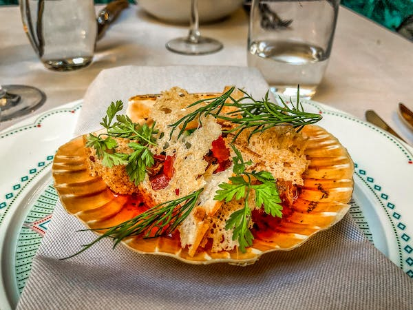

Bareli’s Restaurant and Bar, within the charming confines of Harmony Suites, offers an exquisite
dining experience like no other. With its inviting ambiance and an array of delicious culinary
delights, it’s a culinary haven for both guests and locals alike. The restaurant’s fusion of
flavors, impeccable service, and a diverse menu ensure an unforgettable dining experience. Whether
you’re savoring a romantic dinner for two or enjoying a casual meal with friends, Bareli’s promises
a delightful journey through the world of gastronomy, right in the heart of Harmony Suites.
Direction from hotel